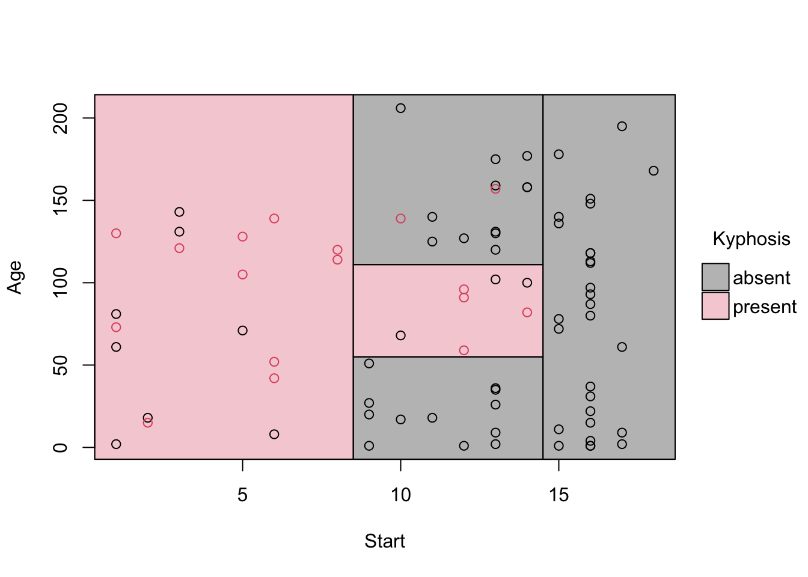
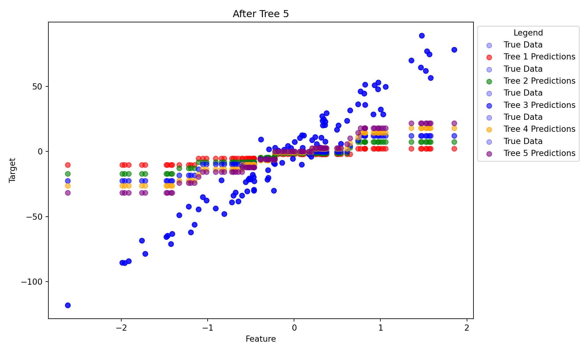

For a variety of regression and classification tasks we can use what was once the state of the art and that is random forrests
Code
import polars as pl import polars.selectors as csfrom sklearn.datasets import make_regressionfrom sklearn.ensemble import GradientBoostingRegressorimport numpy as npimport pandas as pd import matplotlib.pyplot as pltfrom sklearn import treefrom sklearn.tree import (DecisionTreeClassifier as DTC, DecisionTreeRegressor as DTR, plot_tree, export_text)from sklearn.metrics import (accuracy_score, log_loss)from sklearn.model_selection import train_test_splitfrom sklearn.model_selection import cross_val_scorefrom sklearn.metrics import accuracy_score, precision_score, recall_score, f1_score, roc_auc_score, confusion_matrix, classification_report, ConfusionMatrixDisplay from sklearn.ensemble import\ (RandomForestRegressor as RF, GradientBoostingRegressor as GBR)import arviz as azfrom great_tables import GTcarseats = pl.read_csv('data/Carseats.csv').with_columns( pl.when(pl.col('Sales') >0).then(pl.lit('Yes')).otherwise(pl.lit('No')).alias('high'))
7.1 A Tree
Underriding the entire idea of Bagging and Boosting are regression trees.. Regression trees have a lot of math behind an inherently kind of simple and beautifully dumb idea.
When we fit a single tree there are a set of rules that we give it to make decisions about the data if a variable hits that rule then depending on what side of the line it is then it will split the data off into the left or right side. In the example above when income is not greater than or equal to 24.5 we split it into the false category an then it stops. We have satisfied the criteria. In the true column we then repeat the proces however when we hit the false column again we have a new criterion and that is how much there is on advertising spending.
Formally we are splitting the predictor space into a number of regions or leave or the little boxes. The branches, lines are the branches. Somewhat unituitevely at first the leaves appear at the bottom and the stem appears at the top. Intuitively each side gets labelled region one on the graph with the associated points and so on and so forth. In practice this creates a lot of weird boundaries that map onto interactions or different functional forms. Making them good at finding thse relationships without directly specifying them.
library(rpart)library(parttree)out =rpart(Kyphosis ~ Start + Age, data = kyphosis)# Grab the partitions and plotfit_pt =parttree(out)plot(fit_pt)

Figure 7.1
7.2 Why do this?
OLS is really nice in the social sciences where we have a better understanding of the DGP and not alot of variables and we don’t neccessarily have that or have the luxury of a lot of data. One thing that OLS does a poor job of is that we have to enter in the relationships ourselves and every possible combination of interactions or functional form of a small set of variables is going to overfit the model/we are going to have a lot of multicollinearity. OLS has a closed form solution where we are making these predictions over the entire data. Which is going to get messy in a way we may not quite understand.
Regression trees divide the this mess into smaller regions. We are effectively dividing up the space into small mutually exclusive regions. We do this by starting off greedy we find some value that does well with our splitting rule. Then it will make a split into a mutually exclusive regions then redo this process. Instead of looking ahead to see if there is some partiontion that will make its predictions better in the future it will choose what is convenient.
7.3 Gardening
As you may imagine growing a tree can maximize in sample fit but thats not really what we are after. However a tree with two branches maybe really interpretable and less sensitive to new data but is going to be somewhat biased. In the regression part we did a little cross validation but didn’t really go over it so it is worth talking about.
Cross-validation is critical to our workflow. We use training and test sets to evaluate our models. This is good but effectively we are only evaluating our model once with the validation set. Instead of a spray and pray approach we can hold out “more” data to evaluate our model and tweak it. Generally we want a model that minimizes our test set error. But if tweak the model based on the test set we are going to end up overfitting. Effectively as I understand it is that we are getting leakage into the training phase without cross-validation.
Cross-validation helps with this because we are using parts of our training set that the model hasn’t seen before to tune our models. We shuffle the data a bit and then evaluate our model on the folds. There are lots of methods most people use is K-fold cross validation. We effectively create lots of datasets from our training set where some of the data is used in the evaluation phase and some of it is used in the training phase. This is really beneficial because you can’t just wait around for more data.
7.4 Creating a Forest or Boosting a Tree?
As you may imagine striking a delicate balance in growing a single tree is tricky. Basiscally trees are a little bit like adaptive nearest neighbors. This gets a little more complicated but we will not get into that to much. Once we start partition to things into finer and finer neighborhoods we may be able to tune it pretty well but it is going to be extremely sensitive. Enter bagging and boosting. These rely on a similar idea but go about it in a different way. Basically what if we just made a bunch of dumb models and found a way to make them not dumb?
7.5 Bagging
Bagging is just a fancy way of saying voting or averaging. Instead of one smart tree we make a bunch of them! We fit the trees on random parts of our training data and penalize them for getting them to smart. Once each tree makes its predictions we ask them to vote or average their predictions. Whatever gets spit out is the answer to our problem. Conditional on us doing it correctly. So in classification problem if we are predicting whether or not a transaction is fraudulent we would fit the model asking it to classify a bunch of transactions as fraud or not. Whatever number of trees we ask it to make we are just going to take a simple vote on whether that transaction is fraud or not. It is a little beautifully democratic. This works because we are using the predictions from sevearl weak learners where we have high variance but low bias. Meaning that we may not always get our darts in the same area but the difference between predicted and real values is low. Then once we average over these weak learners we reduce our variance.
Random forests are based off of this idea but we add a small tweak. We still fit a large number of bad learners but we decorrelate the trees to improve performance. We sample the data with replacement where some trees see the same information a few times while others never see the same inforamtion. We also never let any one tree see a majority of the predictors. This will bias downward really good predictors and give other predictors a chance. Than we take a vote/average of what the trees spit out.
7.6 The Intuition Behind Why Random Forests Work Well
One thing that is important is what goes into the linear algebra machine. For things like XGBoost and Random Forests these are kind of the epitome of the “Two Culture” mentioned by Breiman (2001) where the result of a bunch bad learners end up doing really well predicting the relationships between independent and dependent variables. This happens because well we don’t impose many restriction on what the functional form of the relationship between the independent variables between the dependent variable. So if the actual regression equation is something to the effect of
These models are going to have a fairly good chance of picking this weird relationship up because it is dividing up the space into smaller pieces to either classify or generate predicitions. For a visual demstration see Figure 7.1
Substantively what this means is that these methods are uber flexible but if we were are going to use this as a feature selection machine for models with more parametric assumptions than that could be problem. Random forest are a form of self-regularizing adaptive smoothers. As Curth, Jeffares, and van der Schaar (2024) argue
We showed that forests improve upon trees through multiple distinct mechanisms that are usually implicitly entangled: they reduce the effect of noise in outcomes, reduce the variability in realized predictors and reduce potential bias by enriching the class of functions that can be represented.
As you may have guessed a logit doesn’t have these self regularizing properties. So if we cram a bunch of predictors on the right hand side of the equation the likelihood that there is some multicollinearity is pretty high. While this doesn’t effect our coefficient estimates it does effect our standard errors in many cases this can cause them to be inflated resulting in us failing to reject the null. However, it is also possible that this effect is reversed which is highly problematic. Lets say we are interested in describing the effect of some new strategy on some KPI. We can come up with a plausible causal mechanism for why that is. We then go and do our feature selection and our main variable of interest is statistically significant. WOOHOOO great! Not so fast in many political science papers by adding correlated variables we can actually deflate the standard errors causing over rejection of the null (Lenz and Sahn 2021).
The other key property that we should focus on is that random forests search over a more diverse array of functions making their predictions less sensitive to us inputting the features in there wrong. Lets say we have a really good idea that age is an important predictor of reckless driving. We would expect that not only is the effect non-linear but has an interaction with gender or risk taking behavior. We may not be able to directly observe risk taking behavior but we may have some proxies that we could get ahold of like traffic tickets. If this interaction is a significant predictor of wreckless driving then our random forest models are going to pick them up. Unless we explicitly enter these into our model we are not going to pick this relationship up. So if we enter age in without transforming the variable we are likely not going to find its effect or the effect of a one unit increase in age is likely to be incredibly small.
7.7 Boosting
Our other option is boosting. Boosting has different mechanics but the same idea. Instead of making a really good tree we start with a tree that slightly better than random guessing but not that much better on some sample of our training data. However, instead of modeling a lot of trees at once we sequentially fit a series of tree and then sum over them to grab our predictions or classifications
7.7.1 Adaboost
ADAboost focuses on the misclassification part. Where we take the residuals of the weak learners then re-weight the samples to give more weight to mistakes. Then at the end we take the contribution of each learner as the weighted average of the predictions/majority vote. This was popular for awhille but tends not to perform that well compared to gradient boosting.
7.7.2 Gradient Boosting
More recent innovations of boosting use gradient boosting. What is annoying about machine learning is that they are always coming up with catchier terms for old concepts. By gradient we are really just talking about a derivative of our loss function. It depends on what framework you are working in but this could be first order derivatives or second order derivatives. All gradient descent is doing is using the derivative (slope) to move in the direction of the steepest descent (negative gradient).
In OLS we can think of this as finding the slope and finding the value that gets us closer to minimizing the sum of the squared. So we would get predicted values from one tree and see how much this reduces this distance then we take the residuals from the model to try and reduce the distance between the residuals and real values in the next tree. We repeat this process by taking the slope and seeing what direction the values would take. Then we would repeat this process until until we no longer get any improvement minimizing the loss function. In this model the size of the step that we take right or left is determined by our learning rate. So if we the set a high learning rate we may take 2 or three steps in the positive direction rather than a half step in the positive direction. This isn’t a perfect analogy since OLS has a closed form solution but this is the general idea.
In a Jupyter environment, please rerun this cell to show the HTML representation or trust the notebook. On GitHub, the HTML representation is unable to render, please try loading this page with nbviewer.org.
stage_predictions = np.array(list(gbr.staged_predict(X)))colors = ['red', 'green', 'blue', 'orange', 'purple']# Plot predictions from each treeplt.figure(figsize=(10, 6))for i, preds inenumerate(stage_predictions): plt.scatter(X, y, label='True Data', color='blue', alpha=0.3) # True data is blue plt.scatter(X, preds, label=f'Tree {i+1} Predictions', color=colors[i], alpha=0.6) # Different colors for each tree plt.title(f"After Tree {i+1}") plt.xlabel("Feature") plt.ylabel("Target")# Calculate residuals after this tree's prediction residuals = y - predsprint(f"Residuals after Tree {i+1}: {residuals[:5]}")# Move legend outside the plotplt.legend(loc='upper left', bbox_to_anchor=(1, 1), title="Legend")plt.tight_layout() # Adjust layout to fit the legend outsideplt.show()

Within the gradient boosting framework we have two popular approaches: XGboost and LightGBM. Each of these approaches focus on impurity meaning how well a tree can distinguish between two classes using something like a GINI coeficient or Entropy that tries to measure class separtion or using mean squared error.
They both work to reduce these impurities however they differ in how they grow the tree. LightGbm focuses on the leaf wise growth whereas XGBoost will do branch or level wise growth. Functionally all this means is that for a level wise strategy we are growing both sides of the flow chart which kind of imposes some regularization. Whereas leafwise growth adds more and more leaves making better predictions but is prone to overfitting.
7.7.3 Tuning Parameters of XGBoost
It is worth going over since there are a ton of them. Some we may not actually end up touching but still. For referecnce I am going to just use the XGBoost function from sci-kit learn.
loss: Just the loss function to be optimized - So if we were to use a OLS loss function than we would just be using the sum of the squared residuals. Meaning XGBoost is going to minimize the distance between the set of the points using the sum of the squared residuals.
learning rate: The learning rate effectively regularizes the contribution of each tree. So if we have 3 trees the learning rate is going to add a penalty to minimize the contribution of the tree to slow down how much information an individual tree contributes. Typically we have to balance this penalty with the number of trees. In effect the learning rate is a weighting factor for each new model that minimizes how quickly a new tree responds to errors from an old tree.
trees/N_estimators: really just the number of trees our model is going to have.
tree depth: So this is really just a way of saying how tall the tree is. so a tree depth of 5 is going to have 5 levels
criterion: So this governs the ambigous cases. We set a metric to measure the quality of the split
number of iterations no change: How many times does it get to keep trying to improve on the validation score before we stop trainging it.
subsamples: controls the fraction of training data that the trees use for the boosting round. I.e if we set it to .5 it will use half the training data.
min samples split: Effectively how many data points does a node have to have to make a split. Higher values effectively penalize the tree for splitting off points below this threshold. This helps the tree from learning to much about points that could just be weird for any number of recisions
Stop iterations/number of iterations no change: This is effectively the number of times we let the model try to improve its validation score. We only set this if we plan on implementing early stopping. Early stopping is one way to try to prevent overfitting. However, it is a bit of a double edged sword. We could stop it to early and it may not get to learn some of the quirks of the data generating process. We could let it retry 100 times but on the 101st try it actually improves on the validation score. We are also making the assumption that the validation set is representative of the test data. This may be true but we are making a bit of an assumption that random sampling isn’t biting.
mtry/ max features: specifies the number of features that each tree can randomly select from when considering a split at each node. This prevents the tree from overfitting the data since one tree does not see all the features. Since it is still an ensemble method we want the tree to have more shots are a variety of functional forms and interactions.
7.8 Gradient Boosting or Random Trees
The answer is that it kind of depends. Gradient boosting of what ever flavor you choose is going to be more prone to overfitting that random forests. Gradient boosting is also a little bit better in the face of class imbalances. Since the prior tree is used to inform the previous tree if you don’t select good features in the beginning you could end of fitting the noise. The other problem is compute time. Since gradient boosting relies on the previous tree it has to wait till that tree is done being fit.
7.9 Imputation Methods
One thing about random forests and Gradient boosting machines is that they can handle missing values or in the case of random forests can be used as missing values imputers. For the most part missing data is a little bit of a fact of life. Data goes missing for a variety of reasons. Respondents could forget or refuse to identify their race and ethnicity on a survey some people may be embarassed to report their educational attainment. The issue is not that the data is missing the issue is that we don’t actually know the how these data are missing. Classifically we don’t really about missingness in the DV. We will kind of see why when we cover the difference in mechanisms.
missingess_mechanisms = pl.DataFrame( {'Missingess Mechanism':['Missing Completly at Random (MCAR)','Missing at Random (MAR)','Missing Not at Random (MNAR)' ],'Assumption': ['Data is missing completly at random. We update a database and the power goes out. In the full database this data is kind of missing completly at random. Nothing about the DGP dicatates that these missing values','A weaker form of missngness. Missingness in our DV is not determined by our DV. What this means is that we can learn about the missingness by knowing our independent variables','Means that a missing DV is not determined by any of the IVs instead it is determined by the DV iteself' ] })GT(missingess_mechanisms)
Missingess Mechanism
Assumption
Missing Completly at Random (MCAR)
Data is missing completly at random. We update a database and the power goes out. In the full database this data is kind of missing completly at random. Nothing about the DGP dicatates that these missing values
Missing at Random (MAR)
A weaker form of missngness. Missingness in our DV is not determined by our DV. What this means is that we can learn about the missingness by knowing our independent variables
Missing Not at Random (MNAR)
Means that a missing DV is not determined by any of the IVs instead it is determined by the DV iteself
In practice we can never really tell the difference between MNAR or MAR. We can start to investigate the missingness by seeing if we can build a model to classify missing values. If our models start to do a good job of classfiying missing values than we at least have a lead on the possible mechanism. This doesn’t fully get us there because we can only really tell the difference between them with data we never observe. Missing at random is only applicable in very rare instances.
7.9.1 Solutions
For missing completly at random we can simply delete the missingness observations. Whether this is through listwise deletion or just modifying our query to ignore missing values. If we want to save time than we can let the model handle it for us. Certainly for simple models like linear regression the default is to drop it so it can actual solve the optimization problem.
However, if we assume that we can’t simply ignore the values than we have a lot of options. One of the most common forms of handling missingess is that we can perform interpolation. Effectively we are using information in that variable to predict the missing value. Typically this is done with the next value and the previous value to generate a predicition. We then have to use some kind of distance metric to get that value. We can use the mean and make the guess, if we are worried about extreme values we can use the median, or if we want to get fancy then we can use nearest neighbors where it will try and find a typically value in a cluster. So if a 4 is generally surrounded by 3’s and 5’s and we have a missing value sandwhiched between a 3 and a 5 the nearest neighbor interpolation will probably guess 4 because those are the values that are typically within that neighborhood. We can either to this column wise or rowwise. Column wise is going to be a lot cheaper but doesn’t integrate another information that could be helpful in estimating the missing values.
7.9.2 Multiple imputation
Interpolation is fine but we are only guessing once and not integrating all the information that we could into the estimating the missingess or treat the missingness as something as observable. Multiple imputation or imputation methods generally allow us to estimate those missing values but preseve the uncertianty associated with the estimation proceduce. Effectively what we are going to do is treat the missing values as a statistical problem where create some number of copies of our dataset. We make the assumption that the missingness is multivariate normal and the data is MAR or MCAR. We can then start to think of the probability of missingness as a function of the parameter estimates. In the copies of our dataset we then estimate a plausible value. We then bootstrap the data and use a model to get an estimate on the value of the mising data then we draw a single point from the posterior distribution. Once all m datasets are imputed, we fit our model to each dataset separately. The final estimates are obtained by averaging the parameter estimates across all datasets, while the standard errors incorporate both within-dataset variance and between-dataset variance (following Rubin’s rules)
7.9.3 Where do Random Forests Come into this?
Well it turns out that random forest are really great at learning hidden relationships between variables. Unless we place priors on certain variables we are imposing a flat prior or making other assumptions about the data. Random Forests for missing data imputation proposes a more flexible model for missing value imputation then interpolation. For things like KNN imputation or Lasso imputation tuning hyperparameters can be difficult and often effect the imputations in ways that are hard to asssess. One alternative to MICE or AMELIA is missForest which is doesn’t require some of the same overhead for large datasets. In multiple imputation we are making m copies of our dataset then running a model to predict the missing values in the dataset and then running m models on the various datasets and then combining them at the end. These multiple imputation methods have been kept up to date to incorporate machine learning models. As you may imagine this is a lot of heavy lifting computationally for a moderatly sized dataset much less a large dataset.
A compromise, in some respects, is using a specially tailored random forest model to predict the missing values. These random forest approaches do really well with large datasets and incorporate the benefits of bagging into the missing value replacement. By that we mean we can start to model more complex relationships that could explain the missingness in our data
Breiman, Leo. 2001. “Statistical Modeling: The Two Cultures (with Comments and Arejoinder by the Author).”Statistical Science 16 (3): 199–231. https://doi.org/10.1214/ss/1009213726.
Curth, Alicia, Alan Jeffares, and Mihaela van der Schaar. 2024. “Why Do Random Forests Work? Understanding Tree Ensembles as Self-Regularizing Adaptive Smoothers.”https://arxiv.org/abs/2402.01502.
Lenz, Gabriel S., and Alexander Sahn. 2021. “Achieving Statistical Significance with Control Variables and Without Transparency.”Political Analysis 29 (3): 356–69. https://doi.org/10.1017/pan.2020.31.